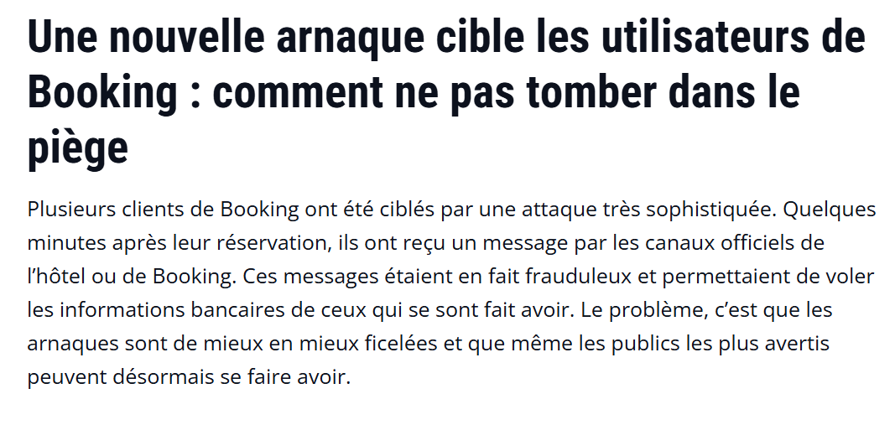

Ma Veille Technologique
La veille technologique consiste à s'informer de façon systématique sur les innovations les plus récentes et les évolutions de mon futur métier pour anticiper les changements.
Sujet Choisi : L'Intelligence Artificielle (SISR & Cybersécurité)
J'ai choisi de suivre particulièrement l'impact de l'IA sur l'administration système et les nouvelles menaces cyber.
L'IA transforme notre métier : automatisation de la surveillance réseau, détection d'intrusions (XDR), mais elle offre aussi de nouvelles armes aux attaquants (phishing généré par IA, deepfakes). Il est crucial de s'y préparer.
Mes Outils de Veille
Pour automatiser la récolte d'informations, j'utilise :
- Feedly : Agrégateur de flux RSS pour centraliser les articles.
- Google Alerts : Alertes sur les mots-clés "IA Cybersécurité" et "Réseau".
- LinkedIn : Pour suivre des experts en cybersécurité et IA.
Mes Sources Fiables
Je consulte régulièrement les plateformes suivantes :
- CERT-FR (ANSSI) : Alertes de sécurité officielles.
- IT-Connect : L'intégration de l'IA dans les systèmes (Microsoft, Linux).
- Le Journal du Hacker : Veille communautaire sur la cybersécurité.
- ZDNet / Le Monde Informatique : Tendances IT globales.
Articles Récents Marquants
Voici quelques exemples de sujets traités récemment dans ma veille :

Mars 2026 - Comment l'IA générative réinvente les attaques de Phishing
Cet article met en lumière la difficulté à detecter l'arnaque, avec des méthode de plus en plus sérieuse comme l'utilisation des canaux de communication utilisé par booking.
Cet article met en lumière la difficulté à detecter l'arnaque, avec des méthode de plus en plus sérieuse comme l'utilisation des canaux de communication utilisé par booking.

Février 2026 - L'intégration de l'IA dans la surveillance réseau (NDR)
Une analyse sur la façon dont les administrateurs utilisent le Machine Learning pour analyser le trafic réseau en temps réel et détecter des comportements anormaux avant que l'attaque n'aboutisse.
Une analyse sur la façon dont les administrateurs utilisent le Machine Learning pour analyser le trafic réseau en temps réel et détecter des comportements anormaux avant que l'attaque n'aboutisse.

Janvier 2026 - Microsoft Security Copilot : L'assistant de l'Admin Sys
Présentation du nouvel outil de Microsoft qui permet aux techniciens de gérer l'Active Directory et d'analyser les logs de sécurité beaucoup plus rapidement grâce à des requêtes en langage naturel.
Présentation du nouvel outil de Microsoft qui permet aux techniciens de gérer l'Active Directory et d'analyser les logs de sécurité beaucoup plus rapidement grâce à des requêtes en langage naturel.